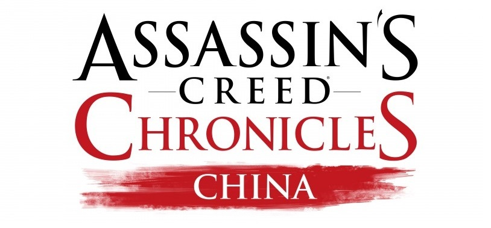

TITOLO: Assassin's Creed Chronicles: China
SVILUPPO: Ubisoft
DATA DI USCITA: 21 aprile 2015 (PS4, Xbox One e PC)
COLLOCAMENTO STORICO: Caduta della dinastia Ming
AMBIENTAZIONI: Cina
TRILOGIA: Assassin's Creed Chronicles
STORIA E GAMEPLAY:
Assassin’s Creed Chronicles: China è ambientato nella Cina del 1526, all’inizio della caduta della dinastia Ming. Vestirai i panni di Shao Jun, l’ultima Assassina rimasta della Confraternita cinese, che ha deciso di tornare nel suo paese per vendicarsi. Addestrata dal leggendario Ezio Auditore, è determinata a compiere la sua vendetta con ogni mezzo e riportare in auge la Confraternita.
Caratteristiche Principali:
Assisti alla caduta di un impero:
Viaggia nei luoghi più leggendari dell'antica Cina. Segui i nemici sui tetti della Città proibita, nasconditi nell'ombra della Grande Muraglia, incontra alcuni personaggi storici ed esplora questo grande Impero.
Scopri uno stile grafico unico:
Portata in vita, fondendo le antiche tecniche di pittura cinesi del XVI secolo con alcuni stili impressionisti più moderni, l'avventura di Shao Jun ti immergerà in uno scenario davvero suggestivo ed evocativo.
Una nuova dimensione di azione furtiva:
Assassin’s Creed Chronicles consente di provare il brivido d'impersonare un'Assassina in un nuovo scenario in 2,5D. Muoviti in silenzio, infiltrati in maniera furtiva e nasconditi per non farti scoprire. Inganna i nemici con fischi e travestimenti. Localizza il tuo bersaglio, uccidilo e fuggi.
Movimenti e attacchi sempre fluidi e veloci:
ome in ogni esperienza di Assassin's Creed, la libertà di movimento è fondamentale. Che tu stia sfuggendo da un pericolo, superando un ostacolo o arrampicandoti in maniera furtiva, potrai muoverti con la massima libertà.
Sfrutta l’ampio arsenale di Shao Jun:
Se i nemici dovessero scoprirti, potrai sempre eliminarli con stile, usando il letale arsenale di Shao Jun, fatto di arti marziali, una potente spada Kian e la nuova lama artigliata.
Spostati su più piani:
Sfrutta i diversi piani degli scenari e scegli il percorso migliore per le tue esigenze. In questo modo potrai scoprire nuovi percorsi, completare missioni secondarie, trovare oggetti nascosti o raggiungere più velocemente il tuo bersaglio.